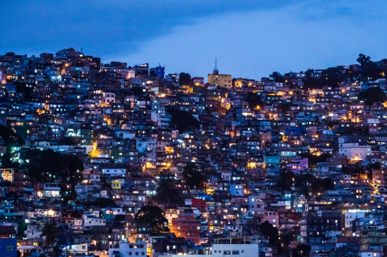

Rio de Janeiro
Rio de Janeiro
Sobre

O Rio de Janeiro é uma grande cidade brasileira à beira-mar, famosa pelas praias de Copacabana e Ipanema, pela estátua de 38 metros de altura do Cristo Redentor, no topo do Corcovado, e pelo Pão de Açúcar, um pico de granito com teleféricos até seu cume. A cidade também é conhecida pelas grandes favelas. O empolgante Carnaval, com carros alegóricos, fantasias extravagantes e sambistas, é considerado o maior do mundo.
Cristo Redentor

O Cristo Redentor é uma estátua que retrata Jesus Cristo localizada no topo do morro do Corcovado, a 709 metros acima do nível do mar, com vista para parte considerável da cidade brasileira do Rio de Janeiro e começou a ser idealizado por volta do século 19, quando o padre francês, Pierre Marie Boss, que atuava em uma igreja com vista para o morro do Corcovado. No entanto, essa ideia se perdeu e só foi resgatada tempos depois pela Princesa Isabel, em 1888.
Favela

As favelas na cidade do Rio de Janeiro começaram a ter início no final do século XIX, quando várias transformações sócioeconômicas pelas quais o Brasil passava e transformações locais começaram a inchar a área central da cidade, formando os primeiros cortiços. Acredita-se que a primeira favela carioca tenha surgido em 1897 no antigo Morro de Santo Antônio, no entanto a favela mais antiga do país situa-se no Morro da Providência, onde alguns soldados provenientes da Guerra de Canudos começaram a morar.